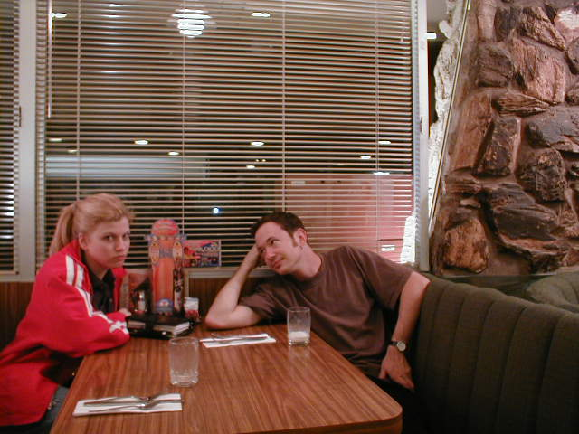

The mobile web was the future
Several years ago, we all joined hands and looked into the
horizon and felt the sun on our faces and chanted together:
"The mobile web is our future." And so we went off to find
our destiny.
We saw the signs
Using what tools we had available, we made **observations**. What
we saw was **mysterious and new**, but we were able to make
some predictions. And our predictions all pointed at a
coming mobile revolution on the Web.
Capable devices proliferated
There were rudimentary feature phones at first with rudimentary,
unpleasant browsers. Then we began to see better phones with
slightly better (but still primitive) browsers. And then better
phones with tolerable browsers. And then even better phones
with browsers that were pleasant to work with and use.
So that happened.
The statistics of the web changed
We watched as the **statistics of the Web changed**: who was using
the Web, and how, and where, and when. And those changes showed
us, with **metrics**, that our predictions were generally correct—
mobile devices were **causing changes at the very core** of the way
people use the Web.
We couldn't predict everything
There were limits to what we could predict accurately.
We **couldn't predict everything**. We could guess at certain things,
and make estimates. We could see the general **shapes and outlines**
of things, but the details were sometimes slow to emerge.
The "old" web was not ready
We *could* see that in certain ways the **old Web was not ready**
for the new Web. That it **broke down** in certain ways.
We'd made too many assumptions
In part this was because we'd made **too many assumptions**. We'd
forced a **certain size and shape** onto the web, and that size
and shape was no longer assured to us, and was ever-changing.
(Internet of Things, right?)
And so we got to work
And so we got to work, hustling, bustling and
inventing ways to make the mobile Web work.
In our brave new world
And what did we find? We found an **entirely new landscape**,
a brave new world.
A wild and new place
We found a **wild and new place**, where we had to make our own
rules. Like **settlers** in the American West, we arrived on the
scene **before society and law**, establishing our own way to do
things.
We made our own rules
To get things to work, we made our own rules, often in isolation.
We'd found a new place where there was no established way of
doing things.
It was not a serene world
If we'd hoped for a relaxing, serene landscape, we were disappointed.
We didn't find calm or relaxation.
We found complexity
Instead, we found complexity. Complexity followed by more complexity.
Constellations of Complexity
We may have longed for **clarity**,
but we faced a constellation of detail, a **galaxy
of specifics**.
Making things work
We **battled the complexity** and made things work,
but often found **complex, ugly or delicate** solutions.
Already at the limit of complexity
And already, then, we were **facing the limit** of the
complexity we could really deal with.
Mobile is not the end of the road
And yet I think we knew even then that,
**despite its immensity**, the mobile revolution would not
be the end of the road for the web.
There's so much more road ahead. While the **changes**
brought to the web by mobile **were and are fundamental...**
...The future of the web **holds more**, even if we can't quite see
exactly all the details.
What *is* clear is that our ability to conquer the complexity
cannot scale to meet the future web.
We need to do as little as possible
To build the future web
Reacting to the new mobile world
So there we were, in a new world.
And this world was characterized by complexity.
As developers in this complex world, we were also
under real, commercial pressures to make things work.
And we *cared*.
One of those pressures was time—we did not have time
to reflect and consider every action we took.
To make things work under the time pressure, we
**added some magic**. Hacks, workarounds, polyfills—again
**because we cared**. Our goal wasn't to increase complexity,
but to get things to work.
As we faced the complexity and even introduced more
complexity with our own solutions, user-agents multiplied.
For example, tablets happened, **dividing our world** into even
more little pieces.
We had so many Different devices and applications,
**branching and forking**, new paths always appearing,
things branching off into infinity.
And so, desperate, we raced to catch up.
Trying to tame the wild
We reacted to what was around us in sometimes **panicky**
ways, but our **frantic energy** wasn't always disorganized.
We looked for ways to **impose order** on the wilderness.
Facing the **chaos of complexity**, we took some time
to recognize patterns.
We looked for **similarity and repetition**, commonality
and rhythm.
And we extrapolated on the patterns we found. We used patterns
and similarities to **reduce some of the complexity**
of making things work in the mobile space.
At the same time, we found that to be successful we had
to become **experts**. We had to **immerse ourselves** in
the **intricacies** of mobile details entirely.
We became very **specialized and experienced**.
We found ourselves extremely focused on the mobile-*ness*
of our pursuits, **zoomed way in on detail**.
And this put us in a **position of losing track**
of the **bigger picture**.
There is no mobile web
—Jeremy Keith
And while we were **nestled deeply** in our mobile-specific
details, a **disruption happened**. Suddenly, via Jeremy
Keith and other thinkers, this idea...that we might
be doing ourselves a disservice to get so specific with
mobile, that there was, in effect, no mobile web.
Caught off-guard,
I had to think about this concept for a long time.
Whew
**Many** of us were caught off-guard and had to think.
It was an **exhausting and confusing** thing to work through.
What is the mobile web?
It made us **stop and think** and ask a lot of **basic questions**
about what we were doing and building. What *was* the mobile web?
What is the Web , anyway?
To ask, even, What is the web , anyway?
We talked around campfires, late into the night.
Re-evaluating what the web is...
and mobile's role within it.
We'd been so focused
We had been so **focused on specifics**, so deep
in the details of the mobile-ness of the web
we were building.
There were signs
There were signs out there that we might have
been **too specific** with our mobile-ness. That the
web was a **more general, universal** thing.
The **promise we saw** in Responsive Web Design was a
symptom of this, that it was **time to integrate** mobile
into the wider web.
And yet, we were stuck in an awkward balancing act.
We'd created some dead ends in the way we'd built things.
And to get to a **cleaner place**, we'd have to **toss out
some of the mistakes** we'd made and **clean up** some of the
**excess rubbish** that had collected.
Welcome back to the World-wide Web
Mobile is a **waypoint** on the web, not
the end of the journey.
But mobile is not an **incidental blip**, either. It is
**fundamental** in defining the future direction of the web.
And so part of our job of making things as simple as
possible involves **merging mobile ideas** into the web
as a whole.
It's too hard
But before I could work my way through some of these
things, I was **already stumbling**. Because building the
Web has become too hard.
A few years ago, we'd just started really wrangling
the multi-device reality.
With ideas like Future Friendly, we were trying to quiet
down the chaos a bit, to focus on what the web had in **common**,
not the **myriad details** we found ourselves increasingly drowning
in.
As for me, at the time, I was **just gaining confidence**. Take the
building of the aforementioned Future Friendly web site. A site
with three web pages, two images and one stylesheet.
Though it had taken six or seven of us a full day to
put it together, we'd pulled something off and were
**feeling triumphant** about it.
But my colleague Scott Jensen, who was also present, took me
aside. "Why did that take so long?" he asked.
I felt sad. Had I not done a good job?
But that wasn't it at all. What Scott was commenting on
was that the **tasks required** to get a working web site
out the door are **smothering**.
It's like we were falling off the edge of what was
humanly possible. Too much complexity.
Everything felt hard and sad

Again, I offer the notion of saving the web by
doing as little as possible.
This isn’t a rationalization for laziness or shirking responsibility—those characteristics are arguably not ones you’d find in successful web devs.
Nor it is a suggestion that we build bland , homogeneous sites and apps that sacrifice all nuance or spark to the Greater Good of total compatibility.
Instead it is an appeal for simplicity and elegance : putting commonality first, approaching differentiation carefully...
...and advocating for consistency in the creation and application of web standards.
Five things
A list of five things to help move the web toward simplicity.
Because mobile trends are important
I believe that certain Mobile web **trends represent
the future** of the web. In **solving mobile-specific** problems,
we found some **seminal solutions** that apply to the greater
web.
Embracing constraints
Some examples: Mobile-first, **constraints-first design**
allow us to **focus on what's really important** in the
things we're building.
Other strategies: Progressive enhancement, responsive
web design (RWD)...
Treating our **content gracefully**, respecting the **fluidity** of
content as it flows in designs in many kinds of environments.
These **ideas are seminal** and will be part of the future **core of the web**.
We can help out by serving in leadership, guidance, teaching roles.
...and by thinking about how to apply what
we've invented on a wider scope ourselves.
Liberating techniques from constraints to make them
applicable to the entire web.
And where possible, reaching for commonality and simplicity.
Thing 2
Details vs. Minutiae
To save ourselves from drowning, we need to learn how to
discern between attention to detail and soul-crushing minutiae.
Nuance versus nitpick: and not getting buried
To learn to catch ourselves when we're in the weeds
Pushing too much detail or overthinking can warp the
simplicity available to us.
When we try to force too much detail, it can be awkward
and point at a broken process.
Lifting ourselves out before we get inundated.
When instead what we want is a freer, stabler product.
It's one of those cases where
going with the flow may be wise.
Every workaround, hack and enhancement we create introduces risk.
Risk: of bugs now, and later.
We do have to worry:
Will it work later? Will we be able to maintain it?
Because everything we actively do introduces risk,
we need to **take caution** with what we add. We need to
**stop and think** each time we throw in another
device-specific workaround, enhancement or hack.
We want to avoid creating a **jungle of complexity**
that gets overgrown and confused, right?
We want to do this to avoid **accidentally,
arbitrarily caging** our content and making it rigid.
The more we push and pull and tweak and get lost
in minutiae, the more rigid the end result becomes.
The more likely to shatter and break if pressured.
Thing 4
Advocating for Standards
This is about **asking** those who are **driving the inner
workings** of the Web: standards creators, browser makers...
Asking for what we need.
But I know that **navigating** this world and knowing how to
**communicate** the right things can feel like an **enigma**.
And not only do we need to **join in** the conversation and
ask for what we need—we also need to **understand what** we're
asking for.
That is, if we're asking for the moon, we should
be able to know **what to do with** the moon when it's given
to us.
To make sure we're ready, we have **reading and learning** to do.
Because these **standards are the gears** of the web;
we need them, and we need to know how to use them.
As developers, we are on the **front lines**. We feel that
it is **our burden** to get things working, to make everything
work and work well.
But we need to make sure our **burden is manageable**, that
we're not taking on more than we should in the long run.
That is, we need to recognize that there are **more people
and factors involved**, that **we're not the only ones** who
can make things go and work.
Even though it can be **unclear and confusing** to tell
**whose responsibility** everything is—device-specific bugs,
supporting weird browsers—**we should consider** that it
might not always be *our* responsibility.
Five things
(That are hard)
At the same time that there is a list of five things
that we can do and think about to make the web a
simpler place to be again, there are also things
that are hard.
Dealing with the loss of "mobile" in our web
Even the semantic shift may prove a hurdle to us.
Changing our focus and our job titles from **"Mobile Web"** to
**"Web"** again. It's not exactly losing face, or shameful,
but it's a **pride thing** a bit, maybe.
That word *mobile*: It's part of our **identity**. It's
part of how we **filter and see the world** around us.
But I think we'll get past this **little disaster**:
we will get past it and bloom again!
But **beyond ourselves** and altering our self-image,
there is all that **mobile-specific stuff**
we built. And some of it is **crazy but genius**.
We don't want that **inspired** knowledge and specialization to **rot**
and ultimately disappear.
And I don't want to **lose all the specialness** and
**uniqueness** that comes with mobile devices. That stuff
is **neat, it's compelling**, it's why we do this, right?
Instead, we want to **nurture the good parts** of what we've
learned and **bring those things to bear** on the wider web.
We can't know the whole future
It's also the case that we can't see the whole future.
We don't know everything that is coming.
We have some sense of some patterns.
We have some good guesses about what is coming in general.
We want to go boldly on, but without undue pride.
Making sure to step back, get the bigger picture, reassess.
Making sure not to lose focus, make assumptions,
make the same mistakes repeatedly.
Our vocabulary trips us up
We also face the reality that our own vocabulary trips us up.
The words and terms we have are old and busted.
Instead of illuminating and elucidating what we're trying
to do to those around us...
They trip us up and tangle us.
What am I talking about? Well, take the word "device"...
I don't know what my advice is, short of making up nonsense words.
What ideas I have are fishy and stinky. But it's a problem.
We have to make things work
And even though I like the idea of "letting go" of certain
things, the reality is that we're still responsible
for making things work in the short term.
Sometimes that means making unusual or unorthodox tools.
This creativity and flexibility is essential;
the alternative is to be frozen in place.
But complex cleverness sure can stand in the way of making
a change or a turn.
It can lead us into unexpected "whoops" moments.
And can obscure the clarity of that beautiful future
I keep on talking about.
We risk dumbing down the web
And are we about to create a really boring web?
Blanketing it with the **average murk** of overgeneralization?
Finding the **right mix** of commonality and differentiation is
very challenging.
Too much **lowest-common demoninator** and the world
starts looking rather **grey and flat**.
Skew too far the other way and risk drowning
in intricate detail.
Lest that seem a bit bleak
So those are five things that challenge us, five
hard things. But lest that seem a bit bleak...
I have some belief that the web will rise to meet us.
And though the state of things is somewhat complex and confusing.
There is an **underlying rhythm** to the web, and it can
be **self-correcting**, in a way. It provides the **tools for
balance and universality**, yet the opportunity for uniqueness.
And just as the **trend** of the Web can **swing** toward
**specialization or complexity**, I think it can **swing back** again.
At the risk of using a **"too-big-to-fail" argument**, the
**market** may help to **force the web** in a certain direction.
Yep, when I think about it...
I have this innate belief in the Web.
I can't help but be weirdly optimistic.
Yep! I can't help it. I think we're going to figure it out,
make it simpler, and it's going to be great.
Lyza Danger Gardner / @lyzadanger
Designed with Reveal.js with lovely help from @tylersticka on the Cloud Four theme.
Every photo in this presentation was taken by me, with the single exception of the photo of Jason Grigsby and me holding a tablet, which was taken by Lisa Teso .
Photos by me are available under the Creative Commons BY-NC-SA 2.0 license.
Read the A List Apart column